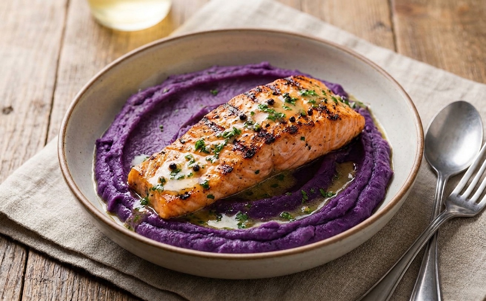
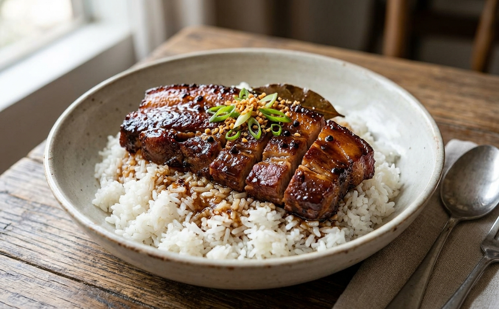
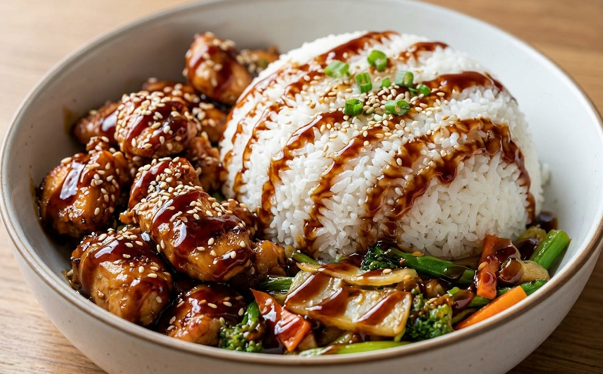
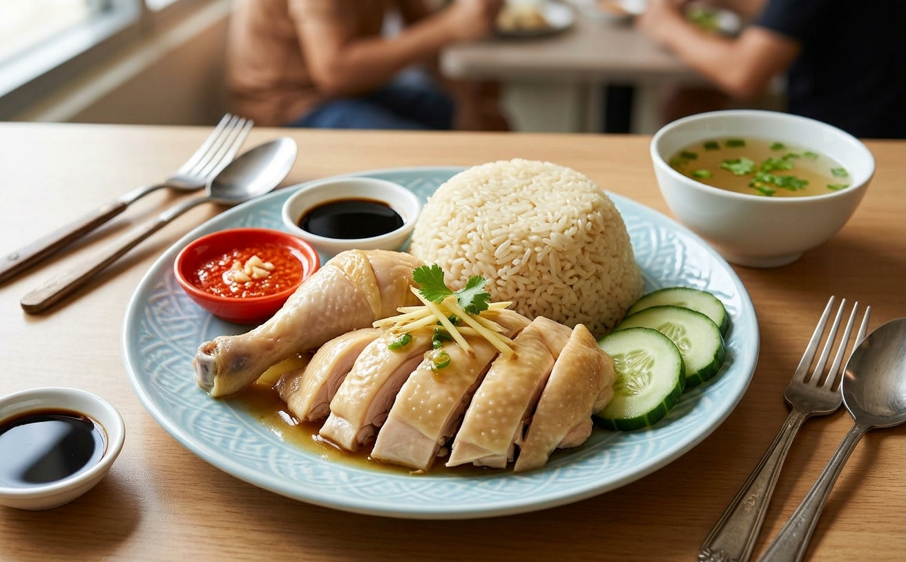

|
|
 |
Glazed Salmon on Ube Mash |
A succulent grilled salmon fillet served over a bed of vibrant, velvety purple sweet potato mash, drizzled with a rich lemon butter sauce and finished with fresh herbs. |
 |
Glazed Pork Adobo Liempo Bowl |
A savory bowl of tender, slow-simmered pork liempo infused with a rich marinade of soy sauce, vinegar, black peppercorns, and sugar, oven-baked to a caramelized finish and served over a bed of fluffy steamed rice. |
|  |
Sesame Teriyaki Chicken Rice Bowl |
A savory teriyaki chicken bowl featuring tender, bite-sized chicken pieces glazed and drizzled with a rich teriyaki sauce and garnished with toasted sesame seeds and fresh scallions, served alongside a neat mound of fluffy steamed rice and a medley of crisp-tender broccoli florets, carrots, and snap peas. |
|  |
Signature Hainanese Poached Chicken Rice |
A classic Hainanese Chicken Rice featuring tender, poached chicken (both breast and thigh) drizzled with savory soy sauce and ginger-scallion oil, served with fragrant, seasoned chicken rice and accompanied by spicy chili-garlic dipping sauce, dark soy sauce, and a bowl of clear chicken broth |